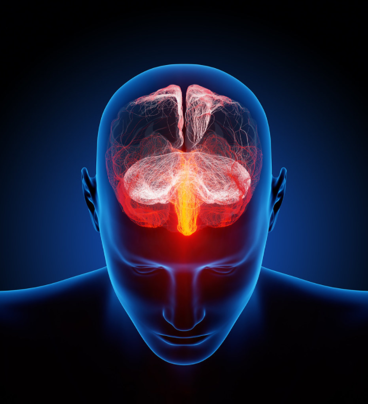
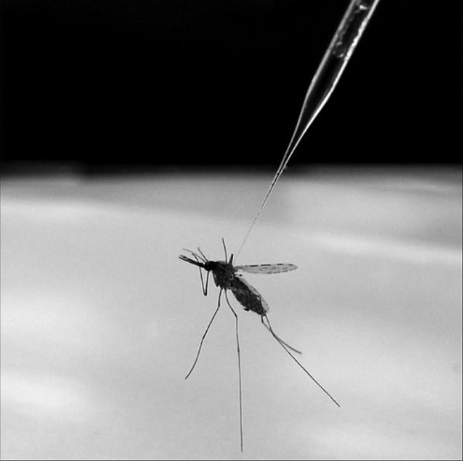
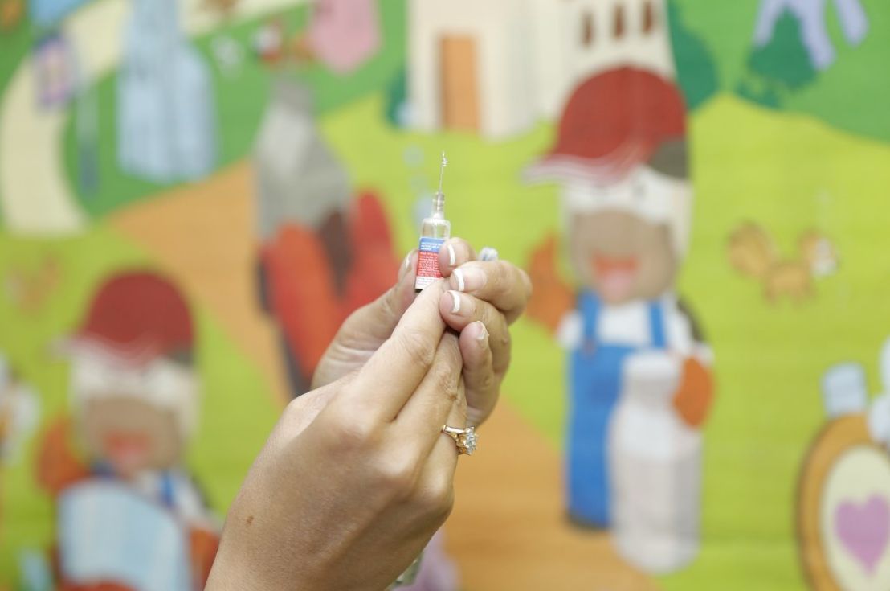

Za udeležence
Za izvajalce
Trainees Edition
Trainers Edition
MODUL 5: PSIHOLOGIJA NAPAČNIH INFORMACIJ
Opis modula
Glavni namen tega modula je predstaviti kognitivne mehanizme, zaradi katerih so ljudje ranljivi za napačne informacije; zaradi katerih so napačne informacije obstojne in jih je težko popraviti ter; ki se lahko uporabijo za preprečevanje vpliva in širjenja napačnih informacij.
Sekundarni cilj je usmerjati izvajalce usposabljanja, ki želijo vsebino tega modula uporabiti pri usposabljanju svojih udeležencev.
S temi cilji so v tem modulu zajeti kognitivni mehanizmi, zaradi katerih so ljudje ranljivi za napačne informacije; zaradi katerih so napačne informacije trajne in; ki jih je mogoče uporabiti za preprečevanje vpliva na napačne informacije, skupaj s smernicami o tem, kako poučevati to temo.
Udeleženci, ki bodo uspešno zaključili ta modul, bodo znali:
- pokazati razumevanje kognitivnih mehanizmov, zaradi katerih so ljudje ranljivi za napačne informacije
- razumeti kognitivne mehanizme, zaradi katerih so napačne informacije vztrajne in jih je težko popraviti
- pokazati razumevanje lastnih kognitivnih mehanizmov, ki jih lahko uporabimo za preprečevanje vpliva in širjenja napačnih informacij
Poleg tega bodo izvajalci usposabljanj, ki bodo uspešno zaključili ta modul, lahko pokazali razumevanje smernic za usposabljanje na to temo.
Struktura modula
Ta modul je sestavljen iz naslednjih delov:
- Opis modula (cilji, opis vsebine in učni rezultati)
- Struktura modula
- Smernice za udeležence
- Smernice za izvajalce usposabljanja (kako se pripraviti, metode za uporabo in nasveti za izvajalce usposabljanja)
- Vsebina (študijsko gradivo in vaje)
- Kviz
- Viri (reference in priporočeni viri ter videoposnetki)
Glavni cilji modula, opis vsebine in učni rezultati so pojasnjeni v delu Opis modula. Vsebina vključuje vsa študijska gradiva in vaje, povezane z vsebino. Kviz vključuje vprašanja z več izbirami, s katerimi lahko udeleženci usposabljanja preverijo svoj napredek. Gradiva imajo dve komponenti: reference in priporočena gradiva za nadaljnji študij. Reference so seznam virov, navedenih v vsebinskem delu. Priporočeni viri so sestavljeni iz seznama dodatnih virov in videoposnetkov, ki jih je zelo priporočljivo prebrati in pogledati za nadaljnje učenje o temi. Smernice za udeležence izobraževanja vključujejo navodila in predloge za udeležence izobraževanja. Smernice za izvajalce usposabljanja vodijo izvajalce usposabljanja skozi različne faze usposabljanja in vsebujejo nasvete, ki bi lahko bili koristni pri poučevanju teme.
Smernice za udeležence usposabljanja
Od udeležencev se pričakuje, da preberejo besedilo, natančno preučijo primere, si ogledajo priporočene videoposnetke in naredijo vaje. Za dodatne informacije lahko poiščejo predlagane vire. Po končanem študiju vsebine udeležencem priporočamo, da opravijo kviz, s katerim bodo ocenili svoj napredek. Študijsko gradivo lahko popravijo, kadar in če je to potrebno.
Smernice za izvajalce usposabljanja
Smernice za izobraževalce vključujejo predloge in nasvete o tem, kako predstaviti vsebino tega modula odraslim.
Priprava
Priporočamo pripravo predstavitve (PowerPoint/Prezi/Canva), obogatene z vizualnim gradivom (slike in videoposnetki) in jasnimi primeri. Predlagamo tudi izbiro in predstavitev lokalnih primerov (specifičnih za državo. Bolj kot so primeri znani in priljubljeni, bolje bo sporočilo posredovano.
Kako začeti
Na začetku lahko uporabite kratek kviz (3 do 5 vprašanj) v programu Kahoot ali vprašanja z Mentimetrom, da udeležence pritegnete k temi. Uporablja se lahko kot motivacijsko orodje in tudi kot orodje za preverjanje obstoječega znanja udeležencev o temi.
Učne metode
Med usposabljanjem se lahko kombinirajo različne učne metode. Na primer:
- predavanje
- diskusija
- delo v skupinah
- samorefleksija
Nasveti za izobraževalca
Ogrevanje
Učinkovit način vključevanja udeležencev in določanja skupnih pričakovanj o tem, kaj se bodo naučili, je postaviti nekaj predhodnih vprašanj o temi. Udeležence lahko na primer vprašate, kaj menijo o vlogi psiholoških dejavnikov pri širjenju dezinformacij, kaj naredi ljudi ranljive za dezinformacije, zakaj nas zalotijo pri lažnih novicah in zakaj je dezinformacije tako težko popraviti.
Po razpravi se prepričajte, da so udeleženci sposobni razumeti človeško psihologijo, zaradi katere so ljudje ranljivi za dezinformacije.
Predstavitev učnih ciljev
Jasno je treba opredeliti cilj (to je seznaniti ljudi s kognitivnimi mehanizmi, zaradi katerih so dovzetni za dezinformacije, zaradi katerih so dezinformacije trajne in jih je težko popraviti ter s katerimi je mogoče preprečiti vpliv in širjenje dezinformacij). Po ogrevalnih vprašanjih bo lažje pojasniti cilje.
Predstavitev učnih vsebin
Med predstavljanjem vsebine poskrbite za interakcijo z udeleženci in jih spodbujajte k aktivnemu sodelovanju.
- Preden predstavite pregled kognitivnih dejavnikov, zaradi katerih so ljudje ranljivi za napačne informacije, prosite udeležence, da jih podrobneje predstavijo.
- Preden podate pregled kognitivnih dejavnikov, zaradi katerih so napačne informacije vztrajne in jih je težko popraviti, prosite udeležence, da jih podrobneje predstavijo.
- Ko prikazujete primere, jih podprite z dokazi (po možnosti z ugotovitvami znanstvenih raziskav).
- Po končanem celovitem pregledu kognitivnih mehanizmov, povezanih z dovzetnostjo za dezinformacije, udeležence vprašajte, ali lahko kognitivne mehanizme uporabimo za boj proti dezinformacijam, in to podrobneje pojasnite.
Zaključek
Naredite kratek povzetek učne ure in postavite nekaj vprašanj, ki poudarjajo najpomembnejša sporočila, ki ste jih nameravali podati.
- Udeležence usposabljanja vprašajte, ali jim zavedanje o kognitivnih dejavnikih, ki vplivajo na dovzetnost za dezinformacije in vztrajnost dezinformacij, pomaga pri prevzemanju nadzora.
Po razpravi se prepričajte, da udeleženci razumejo, da za širjenjem dezinformacij stojijo številni kognitivni mehanizmi, vendar pa obstajajo tudi drugi kognitivni mehanizmi, s katerimi se je proti dezinformacijam mogoče boriti.
Vsebina: Psihologija napačnih informacij
Uvod
Danes mediji in internet po eni strani zagotavljajo ogromne količine informacij, število agentov (kot so propagandisti, dobičkarji in troli) pa se bori za nadzor nad našimi mislimi in občutki (WikiMedia UK, 2017), po drugi strani pa je na posamezniku, da loči dejstva od izmišljenih vsebin. Vendar imajo posamezniki omejen čas, kognitivne vire ali motivacijo za razumevanje zapletenih vprašanj, kot so znanstvena spoznanja ali politična dogajanja, zato so napačne predstave pogoste. Poleg tega je netočna prepričanja, ko se enkrat oblikujejo, izredno težko odpraviti (Ecker, Lewandowsky, Swire in Chang, 2011, str. 570). Tudi ko ljudje prejmejo jasne in verodostojne popravke, napačne informacije še naprej vplivajo na njihovo razmišljanje. Posledice so lahko resne. Vera v napačne informacije lahko negativno vpliva na sprejemanje odločitev in ima realne posledice na tako različnih področjih, kot so izobraževanje, zdravje in gospodarstvo (Swire-Thompson in Ecker, 2018, str. 2 v pred-tisku).
Psihologija napačnih informacij se ukvarja z miselnimi bližnjicami, zmotami in iluzijami, ki ljudi spodbujajo, da verjamejo v stvari, ki niso resnične. Človeška psihologija je tista, zaradi katere so ljudje dovzetni za napačne informacije in vpliva na to, ali popravki delujejo ali ne (Shane, 2020c).

"Človeški možgani so ponazorjeni z milijoni majhnih živcev" avtorja Ars Electronica je licencirano pod CC BY-NC-ND 2.0
Kognitivni mehanizmi, zaradi katerih so ljudje dovzetni za napačne informacije
Na kratko so predstavljene psihološke teorije in kognitivni dejavniki, zaradi katerih so ljudje dovzetni za napačne informacije. Da bi lahko preprečili njihove škodljive učinke, je pomembno razumeti te dejavnike in ločiti enega od drugega.
Kognitivna skopost ali intelektualna lenoba
Intelektualna lenoba ali t. i. kognitivna skopost je nagnjenost k razmišljanju in reševanju problemov na preprostejše načine ter izogibanje zahtevnemu kognitivnemu naporu, ne glede na inteligenco (Cognitive miser, 2020). Izraz obravnava "psihološke mehanizme, ki varčujejo s časom in naporom, porabljenim za obdelavo informacij, s poenostavljanjem družbene resničnosti, ki bi sicer s svojo kompleksnostjo preobremenila človekove kognitivne zmožnosti" (Cognitive miser, 2021).
Čeprav kognitivna skopost pomaga ljudem, da učinkovito uporabljajo svoje možgane, povzroča tudi, da ljudje ne vložijo dovolj kognitivnega napora, ko je ta potreben, na primer ko razmišljajo o tem, ali je nekaj, kar vidijo v novicah, res (Shane, 2020c).
Zadovoljstvo
"Zadovoljstvo je izbira informacij, ki so 'dovolj dobre' za zadovoljitev osnovnih potreb, ali izbira prvega 'sprejemljivega odgovora' na vprašanje ali rešitev problema" (Cooke, 2018). Je ena od oblik omejene racionalnosti in vodi ljudi k temu, da ne uporabijo vseh svojih kognitivnih virov za doseganje optimalnih rezultatov, temveč uporabijo le toliko, da zagotovijo dovolj optimalen rezultat za kontekst (Metzger in Flanagin, 2013, str. 213).
"Zadovoljstvo je lahko posledica več dejavnikov, kot so intelektualna lenoba; nepripravljenost ali nezmožnost spoprijemanja s preobremenjenostjo z informacijami; pomanjkanje potrebnih veščin vrednotenja informacij. Ne glede na vzrok prispeva k širjenju napačnih informacij/dezinformacij, saj omogoča, da nekakovostne informacije ostanejo v obtoku in se širijo" (Cooke, 2018).
Teorija dvojnega procesa
Teorija dvojnega procesa razmišljanja trdi, da sočasno obstajata dva različna sistema razmišljanja, in sicer hitro in počasno razmišljanje. Na splošno je hitro mišljenje hitra, samodejna, lahkotna, asociativna in afektivna oblika razmišljanja. V nasprotju z njim je počasno mišljenje preudaren in premišljen proces, ki zahteva napor in uporabo kognitivnih virov ter temelji na simbolnem in abstraktnem ravnanju s pravili (Gronchi in Giovannelli, 2018).
Ljudje so nagnjeni k kognitivni skoposti, zato običajno uporabljajo hitro in samodejno procesiranje, kar ustvarja tveganje za napačne informacije iz dveh razlogov. Prvič, lažje kot je nekaj obdelati, večja je verjetnost, da bo veljalo za resnično. Hitre in enostavne sodbe se pogosto zdijo pravilne, tudi če niso. Drugič, zaradi učinkovitosti lahko spregledamo podrobnosti, ki so včasih lahko ključnega pomena. Na primer, človek se lahko spomni nečesa, kar je prebral na internetu, vendar pozabi, da je bilo to ovrženo (Shane, 2020c).
Hevristika
Hevristika je miselna bližnjica, ki olajša kognitivno obremenitev pri odločanju (Heuristic, 2021). Hevristika ljudem omogoča hitro in učinkovito reševanje problemov ter sprejemanje odločitev (Cherry, 2021). Raziskave dokazujejo, da ima hevristika pomembno funkcijo, saj ljudem pomaga učinkovito obvladovati velike količine informacij in odločitev, s katerimi se srečujejo vsak dan (Metzger in Flanagin, 2013, str. 214).
Čeprav hevristika pomaga pospešiti reševanje problemov in proces odločanja, lahko vnaša napake. Privedejo lahko do kognitivnih pristranskosti, netočnih sodb in napačnih sklepov. Zanašanje na obstoječo hevristiko lahko tudi otežuje videnje alternativnih rešitev ali snovanje novih zamisli. Hevristika prispeva tudi k stereotipom in predsodkom (Cherry, 2021).
Kognitivna disonanca
Kognitivna disonanca opisuje duševno nelagodje osebe, ki ga sproži situacija, v kateri je soočena z dejstvi, ki so v nasprotju z njenimi prepričanji, idejami in vrednotami. Teorija kognitivne disonance predpostavlja, da si ljudje prizadevajo za notranjo psihološko skladnost. Kadar je torej prisotna disonanca, jo poskušajo zmanjšati in doseči skladnost. Poleg tega se dejavno izogibajo situacijam in informacijam, ki bi verjetno povečale disonanco (Taddicken & Wolff, 2020, str. 207). Zaradi kognitivne disonance lahko ljudje zavrnejo verodostojne informacije, da bi zmanjšali disonanco (Shane, 2020c).

"Disonanca" avtorja hernanpba je licenciran pod CC BY-SA 2.0
Potrditvena pristranskost
Potrditvena pristranskost, ena od številnih kognitivnih pristranskosti, ki jo lahko obravnavamo kot problematičen vidik človeškega razmišljanja, pomeni iskanje ali razlaganje dokazov na način, ki je pristranski do obstoječih prepričanj in pričakovanj (Nickerson, 1998, str. 175). Z drugimi besedami, gre za težnjo po iskanju in verjetju informacij, ki že potrjujejo obstoječe miselne modele, predhodno znanje in prepričanja, v nasprotju z iskanjem informacij iz različnih potencialno nasprotujočih si virov (Cooke, 2018).
Dezinformacijski akterji lahko to težnjo izkoristijo za krepitev obstoječih prepričanj (Shane, 2020c). Številni empirični dokazi potrjujejo idejo, da je potrditvena pristranskost obsežna, močna in se pojavlja v številnih oblikah. Dokazi podpirajo tudi stališče, da ko oseba enkrat zavzame stališče o nekem vprašanju, postane njen glavni namen zagovarjanje ali utemeljevanje tega stališča. To pomeni, da ne glede na to, ali je bila človekova obravnava dokazov pred zavzetjem stališča nepristranska, lahko pozneje postane zelo pristranska (Nickerson, 1998, str. 177).
Motivirano sklepanje
Motivirano sklepanje je oblika sklepanja, pri kateri ljudje dostopajo do argumentov, jih oblikujejo in ocenjujejo na pristranski način, da bi prišli do želenega zaključka. Ljudje uporabljajo strategije utemeljevanja, ki jim omogočajo, da pridejo do zaključkov, ki jih želijo (Motivated Reasoning, n.d.). Z drugimi besedami, ljudje uporabljajo svoje spretnosti sklepanja, da bi verjeli, kar želijo verjeti, namesto da bi ugotavljali resnico. Pri tem je ključna misel, da lahko napačno prepričanje povzročijo racionalne zmožnosti ljudi in ne lenobno ali iracionalno razmišljanje (Shane, 2020c).
Tekočnost
Tekočnost se nanaša na to, kako enostavno ljudje obdelujejo informacije. "Ponavljajoča se izpostavljenost neki izjavi poveča subjektivno lahkotnost obdelave te izjave. Ta povečana lahkotnost obdelave pa poveča verjetnost, da bo izjava ocenjena kot resnična" (Reber in Unkelbach, 2010, str. 563). Z drugimi besedami, ljudje bodo bolj verjetno verjeli, da je nekaj resnično, če lahko to tekoče obdelajo (Shane, 2020c).
Eden od dejavnikov, ki določajo tekočnost procesiranja, je ponavljanje. "Ko ljudje večkrat slišijo ali vidijo neko izjavo, verjamejo, da je verjetnost, da je ta izjava resnična, večja kot pri novih izjavah, s katerimi se še nikoli niso srečali" (Reber in Unkelbach, 2010, str. 564). Že slišane stvari se lažje predelajo, zato je verjetneje, da bodo ljudje vanje verjeli. S ponavljanjem se učinek še poveča. Torej tudi če je nekaj ovrženo, lahko že samo ponavljanje prvotne trditve povzroči, da je bolj znana, tekoča in verodostojna (Shane, 2020c).
Selektivna izpostavljenost in selektivno izogibanje
Izraza "selektivna izpostavljenost" in "selektivno izogibanje" se uporabljata za opis vedenja, pri katerem oseba aktivno išče informacije, ki podpirajo njena stališča, in se izogiba informacijam, ki jo izzivajo. V družbenih medijih je mogoče selektivno izogibanje preprosto izvesti z odstranjevanjem ali skrivanjem neželenih vsebin/oseb (Malinen, Koivula, Keipi in Koiranen, 2018, str. 351), medtem ko je mogoče selektivno izpostavljenost izvesti s filtriranjem. Selektivno izpostavljanje, h kateremu so nagnjeni ljudje, se namesto njih samodejno izvede tudi z algoritemskim filtriranjem (Wardle & Derakhshan, 2017, str. 47).

"Ne vidim te..." avtorja tropical.pete je licenciran pod CC BY-SA 2.0
Obstajajo številne razlage, zakaj prihaja do selektivne izpostavljenosti. Stroud (2017, str. 3-4) v svojem pregledu navaja, da so kognitivna disonanca, motivirano sklepanje, potrditvena pristranskost, tekočnost in kognitivna lakomnost med mehanizmi, ki delujejo usklajeno, ali pa lahko različne razlage pojasnijo selektivno izpostavljenost v različnih okoliščinah.
Pluralistična nevednost proti učinku lažnega soglasja
Pluralistična nevednost je nerazumevanje tega, kaj mislijo in verjamejo drugi v družbi. Obstaja razhajanje med dejansko razširjenostjo nekega prepričanja v družbi in tem, kar ljudje v tej družbi mislijo, da verjamejo drugi (Lewandowsky, Ecker, Seifers, Schwarz in Cook, 2012, str. 113). Zaradi tega lahko ljudje napačno mislijo, da so drugi v večini, ko gre za politično stališče, čeprav je to stališče v resnici stališče, ki ga ima zelo malo ljudi. To se lahko še poslabša z ovinkarjenjem napačnih informacij (npr. teorij zarote), saj se zaradi njih lahko zdi, da so ta stališča bolj priljubljena, kot so v resnici (Shane, 2020c).
Učinek napačnega soglasja je obratna stran pluralistične nevednosti (Lewandowsky, Ecker, Seifers, Schwarz in Cook, 2012, str. 113). V tem primeru ljudje precenjujejo, koliko drugih ljudi deli njihova stališča (Shane, 2020c).
Primer: Razsežnost pluralistične ignorance je lahko zelo presenetljiva
Ugotovitve raziskave so pokazale, da so anketiranci precenili podporo skupnosti svojim stališčem glede avstralskih staroselcev, anketiranci v bolj negativnih kategorijah pa so bili pri svojih ocenah bistveno manj natančni kot tisti v bolj pozitivnih kategorijah (Pedersen, Griffiths in Watt, 2008). Natančneje, čeprav je bilo v vzorcu Avstralcev ugotovljeno, da ima le 1,8 % ljudi izrazito negativen odnos do domorodcev, je teh nekaj posameznikov menilo, da 69 % vseh Avstralcev (in 79 % njihovih prijateljev) deli njihova skrajna prepričanja (Pedersen, Griffiths in Watt, 2008; Lewandowsky, Ecker, Seifers, Schwarz in Cook, 2012).
"Plesalci avstralskih domorodcev" avtorja NAPARAZZI je licenciran pod CC BY-SA 2.0
Učinek tretje osebe
Učinek tretje osebe opisuje posameznike, ki menijo, da imajo medijska sporočila večji učinek (vpliv) na druge ljudi kot nanje (Salwen in Dupagne, 1999, str. 523). Ugotovitve raziskav kažejo, da se ljudje ocenjujejo kot boljši pri prepoznavanju napačnih informacij kot drugi. To pomeni, da lahko ljudje podcenjujejo svojo ranljivost in ne sprejmejo ustreznih ukrepov (Stefanita, Corbu in Buturoiu, 2018, str. 6; Shane, 2020c).
Psevdo-razumska dovzetnost za nesmisel
Psevdo-razumska dovzetnost za nesmisel pomeni, kako dovzetni so ljudje za informacije, ki so malo povezane z resnico (na primer nesmiselni klišeji) (Shane, 2020c). "Psevdo-razumski nesmisel opisuje izjave, ki se lahko zdijo globoke, vendar nimajo pravega pomena" (Dolan, 2019). Razlikuje se od laži, ki namerno nasprotuje resnici. Izsledki raziskav kažejo, da so ljudje zaradi analitičnega razmišljanja manj dovzetni za lažne novice, ljudje, ki so bolj dovzetni za nesmisel, pa so bolj dovzetni za lažne novice (Pennycook in Rand, 2020).
Primer stavka o psevdo-razumskem nesmislu
"Smo sredi visokofrekvenčnega razcveta medsebojne povezanosti, ki nam bo omogočil dostop do same količinske juhe" (Dolan, 2019).
“We are in the midst of a high-frequency blossoming of interconnectedness that will give us access to the quantum soup itself.” (https://www.psypost.org/2019/12/swedish-study-bullshit-receptivity-is-robustly-linked-to-social-conservatism-and-support-for-the-green-party-55057 )
Kognitivni mehanizmi, zaradi katerih so napačne informacije trajne in jih je težko popraviti
Napačne informacije lahko privedejo do slabih odločitev o posledičnih zadevah ter so trdovratne in jih je težko popraviti. Razkrivanje napačnih informacij je pomemben znanstveni in javno-politični cilj, vendar je proces popravljanja napačnih informacij zapleten in še vedno nepopolno razumljen (Chan, Jones, Jamieson in Albarracín, 2017, str. 1531).
Ko so ljudje izpostavljeni napačnim informacijam, jih je težko spraviti iz glave (Shane, 2020b). Ugotovitve raziskave kažejo, da je vztrajanje močnejše, učinek razblinjanja pa šibkejši, zlasti kadar je občinstvo ustvarilo razloge v podporo prvotni napačni informaciji (Chan, Jones, Jamieson in Albarracín, 2017, str. 1531).
Primeri
Primer 1: Splošno razširjena napačna prepričanja o izbruhu virusa Zika v Braziliji
Epidemije in izbruhi bolezni pogosto ustvarjajo teorije zarote in napačne predstave, ki ljudi zavajajo glede tveganj, s katerimi se soočajo, in glede tega, kako se najbolje zaščititi. Govorice, da so izbruh virusa Zika v Braziliji povzročili gensko spremenjeni komarji, so napačne informacije – trditev, ki ni podprta z znanstvenimi dokazi (Schipani, 2016). Vendar so ugotovitve raziskave pokazale, da so teorije zarote in druge napačne predstave o virusu Zika splošno razširjene, popravljalne informacije o virusu Zika pa niso spremenile mnenja ljudi o napačnih trditvah (Carey, Chi, Flynn, Nyhan in Zeitzoff, 2020, str. 1).

"Komar, ki povzroča malarijo" avtorja NIAID je licenciran pod CC BY 2.0
Primer 2: Nekateri ljudje so prepričani o neutemeljeni trditvi o povezavi med avtizmom in otroškimi cepivi
V Združenem kraljestvu je študija iz leta 1998, ki je nakazovala povezavo med običajnim otroškim cepivom in avtizmom, v širši javnosti povzročila precejšen strah glede varnosti cepiva. Ministrstvo za zdravje Združenega kraljestva in številne druge zdravstvene organizacije so takoj opozorile na pomanjkanje dokazov za takšne trditve in starše pozvale, naj ne zavračajo cepiva. Mediji so nato obširno poročali, da nobena od prvotnih trditev ni bila utemeljena. Kljub temu je leta 2002 med 20 in 25 % javnosti še naprej verjelo v povezavo med cepivom in avtizmom, nadaljnjih 39 do 53 % pa je še naprej verjelo, da obstajajo enaki dokazi na obeh straneh razprave (Lewandowsky, Ecker, Seifers, Schwarz in Cook, 2012). Kljub prizadevanjem za odpravo te trditve je mit povzročil upad stopnje cepljenja in povečanje števila bolezni, ki jih je mogoče preprečiti s cepljenjem, ne le v Združenem kraljestvu, temveč tudi drugod (Swire-Thompson in Ecker, 2018; Newport, 2015; Chan, Jones, Jamieson in Albarracín, 2017; Larson, Cooper, Eskola, Katz in Ratzan, 2011).

"Cepljenje z IPV" avtorja Sanofi Pasteur je licenciran pod CC BY-NC-ND 2.0
Primer 3: Več kot četrtina državljanov dvomi o Obamovem državljanstvu
Skupina, znana kot "birthers", je trdila, da je bil Barack Obama, 44. predsednik Združenih držav Amerike, rojen zunaj ZDA (po nekaterih trditvah v domovini svojega očeta v Keniji) in zato po ustavi ne more opravljati funkcije predsednika. Čeprav so bili objavljeni neizpodbitni dokazi, kot so kopija predsednikovega rojstnega lista in obvestila o rojstvu v lokalnih časopisih, so takratne ankete pokazale, da tem trditvam verjame precejšen del javnosti, več kot četrtina javnosti pa dvomi o Obamovem državljanstvu (Travis, 2010; Lewandowsky, Ecker, Seifers, Schwarz in Cook, 2012).
Učinek stalnega vpliva
Napačne informacije še naprej vplivajo na ljudi tudi po tem, ko so bile popravljene. Učinek stalnega vpliva je na nek način neuspeh popravkov (Shane, 2020b). Raziskave so dokumentirale vseprisotne učinke napačnih informacij, saj so pokazale, da je "prepričanja ljudi, ki so bili izpostavljeni napačnim informacijam, izredno težko vrniti na izhodiščno raven, ki je podobno prepričanjem ljudi, ki jim nikoli niso bili izpostavljeni" (Lewandowsky, Ecker, Seifers, Schwarz in Cook, 2012, str. 114). Popravki so pogosto neuspešni, ker se lahko napačne informacije, tudi če so razložene v okviru razblinjanja, pozneje spomnimo kot dejstva. Kar pomeni, da se ljudje spomnijo informacij, vendar pozabijo, da so bile popravljene (Shane, 2020b).
Mentalni modeli
Mentalni model je okvir za razumevanje nečesa, kar se je zgodilo (Shane, 2020b). "Raziskave o mentalnih modelih kažejo, da bi moralo biti učinkovito sporočilo o razkrinkanju dovolj podrobno, da bi prejemnikom omogočilo opustitev prvotnih informacij v korist novega modela. Sporočila, ki prvotne informacije preprosto označijo kot napačne, lahko zato povzročijo, da se prejemniki ne bodo mogli spomniti, kaj je bilo narobe, in jim ne bodo ponudila novega modela za razumevanje informacij" (Chan, Jones, Jamieson in Albarracín, 2017, str. 1532). Zdi se, da je ponujanje dobro argumentiranega, podrobnega sporočila o ovržbi nujno za zmanjšanje vztrajanja napačnih informacij, saj omogoča oblikovanje novega mentalnega modela (Chan, Jones, Jamieson in Albarracín, 2017, str. 1532).
Učinek domnevne resnice
Učinek domnevne resnice je, ko se nekaj zdi resnično, ker ni bilo popravljeno (Shane, 2020b). Pri poskusu boja proti napačnim informacijam z opozorili je nujno, da neka tretja oseba (na primer preverjevalci dejstev) preveri informacije in jih bodisi potrdi bodisi ovrže. Vendar je nemogoče preveriti vsa (ali celo večino) dejstva v naslovih, kar predstavlja pomemben izziv. Zato je le del vseh napačnih informacij uspešno označen z opozorili. Odsotnost opozorila ima dva pomena: ali zadevni naslov še ni bil preverjen ali pa je bil potrjen. Raziskave kažejo, da ljudje sklepajo na slednje, zato ima označevanje nekaterih lažnih naslovov novic nenameren stranski učinek, da se neoznačeni naslovi obravnavajo kot natančnejši (Pennycook, Bear, Collins in Rand, v tisku). Dokazi so dokazali, da učinek domnevne resnice obstaja, kadar so napačne informacije označene na nekaterih objavah v družbenih medijih, na drugih pa ne (Shane, 2020b).
Učinek omadeževane resnice
Učinek omadeževane resnice je, da ljudje zaradi popravkov začnejo dvomiti v druge, resnične informacije. Tveganje je, da popravki in opozorila povzročijo splošno nezaupanje v to, kar ljudje preberejo v medijih (Shane, 2020b). Izsledki raziskav dokazujejo, da neveljavna opozorila o napačnih informacijah omadežujejo novice in povzročijo, da posamezniki na novice gledajo kot na manj verodostojne. Povečan skepticizem, ki ga povzročajo neveljavna opozorila o napačnih informacijah, vodi posameznike k zavračanju informacij, ki so bile dejansko točne (Freeze, Baumgartner, Bruno, Gunderson, Olin, Ross in Szafran, 2020).
Ponavljanje
Ponavljanje povzroča poznavanje, poznavanje pa je še en močan prepričevalni dejavnik, ki vodi k sprejemanju (Paul & Matthews, 2016, str. 4). Ponavljanje je učinkovita tehnika, s katero ljudi pripravimo do tega, da sprejmejo napačne informacije. Pogosteje kot se je neko mnenje pojavilo v preteklosti, bolj je dostopno v spominu in bolj znano se zdi, ko se z njim ponovno srečamo (Weaver, Garcia, Schwarz in Miller, 2007, str. 821). Stray trdi, da prejemanje sporočila na več načinov in iz več virov poveča zaznano verodostojnost sporočila, zlasti če je vir razširjanja nekdo, ki ga prejemnik že pozna (na primer prijatelji in družina) (Stray, 2017; Wardle & Derakhshan, 2017, str. 46).
"Beach Repetition" avtorja Vincent_AF je licenciran pod CC BY-SA 2.0
Dokazano je, da ponavljanje istega mnenja pripelje ljudi do napačnega sklepa, da je mnenje splošno razširjeno, tudi če vse ponovitve prihajajo od istega sporočevalca (Weaver, Garcia, Schwarz in Miller, 2007, str. 822). Namigi, kot je "potrditev", imajo močan vpliv na presojo verodostojnosti ljudi, kar je še posebej problematično v družbenih medijih zaradi tehnik (kot so boti, ki samodejno "všečkajo" ali "delijo" zgodbe), ki lahko ustvarijo lažen občutek priljubljenosti vsebine (Wardle & Derakhshan, 2017, str. 46).
Učinek navidezne resnice
Učinek navidezne resnice se pojavi, ko se zaradi poznavanja (tekočnosti zaradi predhodne izpostavljenosti) nekaj zdi resnično, čeprav to ni (Shane, 2020b). Dokazi kažejo, da že ena sama izpostavljenost poveča poznejše dojemanje točnosti. Poleg tega se ta "učinek navidezne resnice" pri naslovih lažnih novic pojavi kljub nizki ravni splošne verodostojnosti in celo takrat, ko so zgodbe s strani oseb, ki preverjajo dejstva, označene kot sporne ali niso skladne z bralčevimi pogledi na svet (Pennycook, Cannon in Rand, 2018).
Učinek povratnega ognja
Učinek povratnega ognja je teorija, da lahko popravek okrepi vero v napačne informacije (Shane, 2020b). Ideja v ozadju je, da če se trditev ujema s prepričanji nekoga, če mu povemo, da je napačna, bo dejansko še močneje verjel vanjo (Sippit, 2019). Gre za najbolj sporen psihološki koncept na področju napačnih informacij (Shane, 2020b). Predpostavlja namreč, da je preverjanje dejstev neučinkovito ali celo kontraproduktivno. V literaturi poteka razprava o tem, ali učinki povratnega ognja sploh obstajajo. Študije v relevantni literaturi kažejo, da je učinek povratnega ognja dejansko redek in da preverjanje dejstev pomaga pri informiranju ljudi (Sippit, 2019).
Koncept je bil razdeljen na učinek pretiravanja, učinek povratnega ognja svetovnega nazora in učinek povratnega ognja poznavanja: učinek pretiranega povratnega ognja se pojavi, kadar so napačne informacije bolj verodostojne kot preveč zapleteni popravki, zaradi česar se popravek vrne v nasprotno smer in poveča vero v napačne informacije (Shane, 2020b). Učinek povratnega ognja svetovnega nazora naj bi se pojavil, ko so ljudje motivirani, da branijo svoj svetovni nazor, ker popravek izpodbija njihov sistem prepričanj. Oseba torej zavrne popravek, ker je nezdružljiv z njenim svetovnim nazorom, in s tem okrepi svoje prvotno prepričanje (Swire-Thompson, DeGutis in Lazer, 2020; Shane, 2020b). V nasprotju z mehanizmi učinka povratnega ognja svetovnega nazora naj bi se učinek povratnega ognja poznavanja pojavil, ko se napačne informacije v popravku ponovijo (Swire-Thompson, DeGutis in Lazer, 2020). Učinek povratnega ognja poznavanja opisuje dejstvo, da popravki s ponavljanjem napačnih informacij postanejo bolj znani in zato bolj verodostojni (Shane, 2020b).
Kako s kognitivnimi mehanizmi preprečiti vpliv in širjenje napačnih informacij
V tem poglavju so obravnavani psihološki koncepti, ki so pomembni za preprečevanje napačnih informacij in krepitev duševne odpornosti.
Skepticizem
Skepticizem je zavedanje o možnosti manipulacije (skriti načrti) in želja po natančnem razumevanju resnice (Shane, 2020a). Skepticizem lahko zmanjša učinke napačnih informacij, saj vključuje več kognitivnih virov, namenjenih ocenjevanju informacij (tehtanje verodostojnosti tako napačnih informacij kot popravka). "Sposobnost ohranjanja dvoma, dvomov v dokaze in natančnega preverjanja izvirnih podatkov – tudi kadar se ujemajo z lastnim svetovnim nazorom – pripomore k izogibanju zanašanja na napačne informacije, vendar je to težka naloga" (Swire-Thompson in Ecker, 2018).
Pozornost
Pozornost je večje zavedanje o učinkih napačnih informacij (Shane, 2020a). Rezultati raziskav "kažejo, da bi bilo spodbujanje pozornosti (na primer z opozarjanjem ljudi na učinke napačnih informacij, kot je učinek stalnega vpliva) lahko še en učinkovit način za zmanjšanje zanašanja na napačne informacije, vendar je njegova učinkovitost lahko omejena (Ecker, Lewandowsky in Tang, 2010, str. 1094).
Analitično razmišljanje
"Analitično mišljenje, znano tudi kot premišljevanje, je kognitivni proces, ki vključuje premišljeno vrednotenje (utemeljevanje) namesto hitrih, intuitivnih sodb" (Shane, 2020a). Raziskovalci napačnih informacij so ugotovili, da analitično razmišljanje pomaga pri odkrivanju resnice v kontekstu naslovov novic (Bago, Rand in Pennycook, 2020, str. 2; Shane, 2020a).
Trenja
Trenje je nasprotje tekočnosti, ko je nekaj težko obdelati ali izvesti (Shane, 2020a). Rezultati raziskav kažejo, da lahko dodajanje "trenja" (tj. premora za razmislek) pred deljenjem izboljša kakovost informacij, ki se delijo v družbenih medijih, in zmanjša širjenje napačnih informacij (Fazio, 2020, str. 1). Če se trenje vnese v dejanje deljenja, z drugimi besedami, če se ljudi spodbudi, da se ustavijo in razmislijo o točnosti in kakovosti tega, kar objavljajo, je manj verjetno, da bodo širili napačne informacije (Fazio, 2020, str. 2).
Cepljenje
Glede na težave, povezane s popravljanjem napačnih informacij, ko so te že obdelane, je alternativni pristop nevtraliziranje morebitnih napačnih informacij, preden so kodirane, tehnika, ki se imenuje cepljenje ali, kot je pogovorno znano,prebunking" (Cook, Lewandowsky in Ecker, 2017, str. 4).
Cepljenje "se nanaša na tehnike, ki ustvarjajo preventivno odpornost proti napačnim informacijam. Podobno kot cepivo deluje tako, da ljudi izpostavi primerom napačnih informacij ali tehnik napačnega informiranja in jim tako pomaga, da jih v prihodnosti prepoznajo in zavrnejo" (Shane, 2020a). Ugotovljeno je bilo, da je cepljenje učinkovito pri zmanjševanju prepričanja v teorije zarote in povečevanju prepričanja v znanstvene ugotovitve in soglasje (Cook, Lewandowsky in Ecker, 2017, str. 4).
Nagibi
Nagibi so majhne spodbude, ki subtilno nakazujejo vedenje. Koncept je nastal na podlagi vedenjske znanosti (Shane, 2020a). Ko gre za krepitev odpornosti na napačne informacije, poskušajo nagibi na splošno spodbuditi analitično razmišljanje. Nedavna študija je pokazala, da spodbujanje ljudi, naj pred deljenjem napačnih informacij razmislijo o točnosti, bistveno izboljša njihovo presojo, ali so informacije resnične (Pennycook, McPhetres, Zhang, Lu in Rand, 2020).
Vaja
Kviz
Reference
Bago, B., Rand, D. G., & Pennycook, G. (2020). Fake news, fast and slow: Deliberation reduces belief in false (but not true) news headlines. Journal of Experimental Psychology: General.
Carey, J.M., Chi, V., Flynn, D.J., Nyhan, B. & Zeitzoff, T. (2020). The effects of corrective information about disease epidemics and outbreaks: Evidence from Zika and yellow fever in Brazil. Science Advances, 6(5), eaaw7449. DOI: 10.1126/sciadv.aaw7449.
Chan, M. S., Jones, C. R., Jamieson, K. H. & Albarracín, D. (2017). Debunking: A meta-analysis of the psychological efficacy of messages countering misinformation. Psychological Science, 28(11), 1531–1546.
Cherry, K. (2021). Heuristics and cognitive biases. Verywellmind.
Cognitive miser (2020). Wikipedia.
Cognitive miser (2021). Oxford Reference. Oxford University Press.
Cook, J., Lewandowsky, S. & Ecker, U.K.H. (2017). Neutralizing misinformation through inoculation: Exposing misleading argumentation techniques reduces their influence. PLOS ONE, 12(5), e0175799.
Cooke, N. (2018). Fake news and alternative facts: Information literacy in a post-truth era. ALA.
Dolan, E. W. (2019). Swedish study: Bullshit receptivity is robustly linked to social conservatism — and support for the Green Party. PsyPost.
Ecker, U., Lewandowsky, S., Swire, B., & Chang, D. (2011). Correcting false information in memory: Manipulating the strength of misinformation encoding and its retraction. Psychonomic Bulletin & Review, 18, 570–578.
Ecker, U., Lewandowsky, S., & Tang, D. T. W. (2010). Explicit warnings reduce but do not eliminate the continued influence of misinformation. Memory and Cognition, 38(8), 1087-1100.
Fazio, L. (2020). Pausing to consider why a headline is true or false can help reduce the sharing of false news. Harvard Kennedy School Misinformation Review. 10.37016/mr-2020-009.
Freeze, M., Baumgartner, M., Bruno, P., Gunderson, J., Olin, J., Ross, M. & Szafran, J. (2020). Fake claims of fake news: Political misinformation, warnings, and the tainted truth effect. Political Behavior. 10.1007/s11109-020-09597-3.
Gronchi, G. & Giovannelli, F. (2018). Dual process theory of thought and default mode network: A possible neural foundation of fast thinking. Frontiers in Psychology, 9, 1237. doi: 10.3389/fpsyg.2018.01237.
Heuristic (2021). Wikipedia.
Larson, H. J., Cooper, L. Z., Eskola, J., Katz, S. L., & Ratzan, S. C. (2011). Addressing the vaccine confidence gap. The Lancet, 378, 526–535.
Lewandowsky, S., Ecker, U.K.H., Seifers, C. M., Schwarz, N. & Cook, J. (2012). Misinformation and its correction: Continued influence and successful debiasing. Psychological Science in the Public Interest, 13 (3), 106–131.
Malinen, S., Koivula, A., Keipi, T. & Koiranen, I. (2018). Exploring selective exposure and selective avoidance behavior in social media. SMSociety '18, July 18–20, 2018, Copenhagen, Denmark.
Metzger, M. J. & Flanagin, A. J. (2013). Credibility and trust of information in online environments: The use of cognitive heuristics. Journal of Pragmatics, 59, 210-220.
Motivated Reasoning. (n.d.). Psychology Research and Reference.
Newport, F. (2013). Americans still think Iraq had weapons of mass destruction before the war. Gallup News Service.
Newport, F. (2015). In U.S., percentage saying vaccines are vital dips slightly.
Nickerson, R. (1998). Confirmation bias: A ubiquitous phenomenon in many guises. Review of General Psychology, 2(2), 175–220.
Paul, C. & Matthews, M. (2016). The Russian “firehose of falsehood” propaganda model: Why it might work and options to counter it.
Pedersen, A., Griffiths, B., & Watt, S. E. (2008). Attitudes toward out-groups and the perception of consensus: All feet do not wear one shoe. Journal of Community & Applied Social Psychology, 18(6), 543–557.
Pennycook, G., Bear, A., Collins, E. T. & Rand, D. G. (in press). The implied truth effect: Attaching warnings to a subset of fake news headlines increases perceived accuracy of headlines without warning. Management Science.
Pennycook, G., Cannon, T. D., & Rand, D. G. (2018). Prior exposure increases perceived accuracy of fake news. Journal of Experimental Psychology: General, 147(12), 1865-1880. DOI: 10.1037/xge0000465.
Pennycook, G., McPhetres, J., Zhang, Y., Lu, J. G. & Rand, D. G. (2020). Fighting COVID-19 misinformation on social media: Experimental evidence for a scalable accuracy nudge intervention. Psychological Science, 31(7) 770–780
Pennycook, G. & Rand, D. (2020). Who falls for fake news? The roles of bullshit receptivity, overclaiming, familiarity, and analytic thinking”. Journal of Personality, 88, 185-200.
Reber, R. & Unkelbach, C. (2010). The Epistemic status of processing fluency as source for judgments of truth”. Review of Philosophy and Psychology, 1 (4), 563–581.
Salwen, M.B. & Dupagne, M. (1999). The third-person effect: Perceptions of the media’s influence and immoral consequences. Communication Research, 26(5), 523-549.
Schipani, V. (2016). GMOs didn’t cause the Zika outbreak.
Shane, T. (2020a). The psychology of misinformation: How to prevent it. First Draft.
Shane, T. (2020b). The psychology of misinformation: Why it’s so hard to correct. First Draft.
Shane, T. (2020c). The psychology of misinformation: Why we’re vulnerable. First Draft.
Sippit, A. (2019). The backfire https://fullfact.org/blog/2019/mar/does-backfire-effect-exist/ effect: Does it exist? And does it matter for factcheckers? Full Fact.
Stefanita, O., Corbu, N. & Buturoiu, R. (2018). Fake news and the third-person effect: They are more influenced than me and you. Journal of Media Research, 11( 3), 5-23.
Stray, J. (Feb 27, 2017), Defense Against the Dark Arts: Networked Propaganda and Counter-Propaganda, Tow Center for Digital Journalism, Medium.
Stroud, N. J. (2017). Selective exposure theories. In: K. Kenski & K. H. Jamieson (Eds.). The Oxford Handbook of Political Communication.
Swire-Thompson, B. & DeGutis, J. & Lazer, D. (2020). Searching for the Backfire Effect: Measurement and Design Considerations. Journal of Applied Research in Memory and Cognition. 9. 10.1016/j.jarmac.2020.06.006.
Swire-Thompson, B. & Ecker, U. (2018). Misinformation and its correction: Cognitive mechanisms and recommendations for mass communication. In B. G. Southwell, E. A. Thorson & L. Sheble (Eds.) Misinformation and Mass Audiences. University of Texas Press.
Taddicken, M. & Wolff, L. (2020). Fake news’ in science communication: Emotions and strategies of coping with dissonance online. Media and Communication, 8 (1), 206–217.
Travis, S. (2010). CNN poll: Quarter doubt Obama was born in U.S.
Wardle, C. & Derakhshan (2017). Information disorder: Toward an interdisciplinary framework for research and policymaking. The Council of Europe.
Weaver, K., Garcia, S. M., Schwarz, N. & Miller, D. T. (2007). Inferring the popularity of an opinion from its familiarity: A repetitive voice can sound like a chorus. Journal of Personality and Social Psychology, 92 (5), 821–833.
WikiMedia UK (2017). Evidence provided to the UK parliamentary inquiry on fake news.
Priporočeni viri
Shane, T. (2020a). The psychology of misinformation: How to prevent it. First Draft.
Shane, T. (2020b). The psychology of misinformation: Why it’s so hard to correct. First Draft.
Shane, T. (2020c). The psychology of misinformation: Why we’re vulnerable. First Draft.
Priporočeni videoposnetki
Shane, T. (2020). The psychology of misinformation: Webinar.